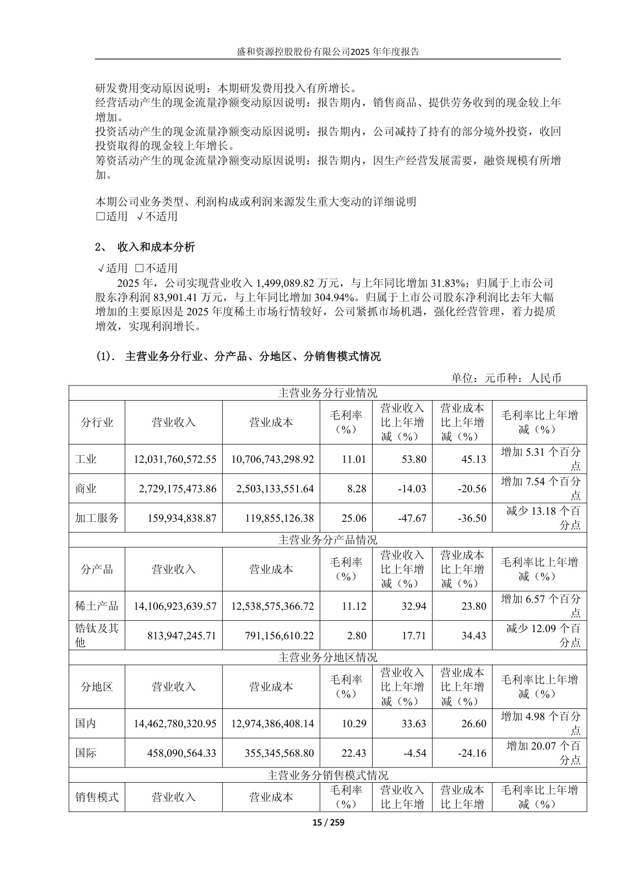
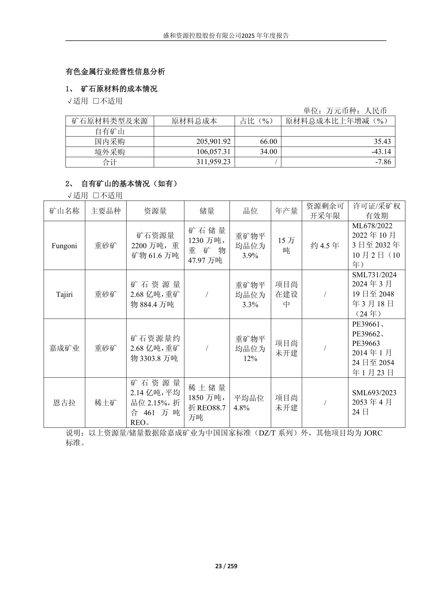

SHENGHE RESOURCES 🇨🇳 (SSE:600392)
Model biznesowy w obrazach

Struktura przychodów wg branż, produktów i regionów. Strona chińskojęzycznego raportu rocznego 2025 (Shenghe Resources).
Co widać na tej stronie: W 2025 r. spółka osiągnęła około 15 mld CNY przychodu (wzrost o 31,8% rok do roku) i około 839 mln CNY zysku netto (wzrost o 305%, głównie dzięki dobrej koniunkturze na ziemie rzadkie). Tabela rozbija przychód na trzy przekroje (kwoty w juanach). Wg branży: przemysł 12,0 mld CNY (marża 11%), handel 2,7 mld CNY (marża 8,3%), usługi przetwórcze 0,16 mld CNY (marża 25%). Wg produktu: produkty ziem rzadkich 14,1 mld CNY (marża 11,1%) wobec segmentu cyrkonowo-tytanowego 0,81 mld CNY (marża 2,8%). Wg regionu: rynek krajowy 14,5 mld CNY (marża 10,3%) znacząco przewyższa sprzedaż międzynarodową 0,46 mld CNY, choć ta ostatnia ma wyższą marżę (22,4%).

Baza zasobowa i pochodzenie surowca. Strona chińskojęzycznego raportu rocznego 2025 (Shenghe Resources).
Co widać na tej stronie: Górna tabela pokazuje koszt rudy wg źródła: 66% to zakupy krajowe, 34% zagraniczne, co potwierdza, że spółka w dużej mierze kupuje surowiec, a nie wydobywa go samodzielnie. Dolna tabela to własne kopalnie (głównie piaski ciężkich minerałów): Fungoni (22 mln t rudy, produkcja 150 tys. t rocznie, około 4,5 roku życia kopalni), Tajiri (268 mln t rudy, w budowie), Jiacheng (268 mln t rudy, jeszcze niezabudowana) oraz projekt ziem rzadkich Ngualla (214 mln t rudy, około 4,61 mln t tlenków REO, jeszcze niezabudowany). Kolumny podają kolejno zasoby, rezerwy, gatunek rudy, roczną produkcję, pozostały okres eksploatacji i ważność koncesji. Dane raportowane głównie wg standardu JORC.
W kontekście: Wydobycie (upstream)
Czym jest spółka. Shenghe Resources to założona w 1998 r. chińska grupa surowcowa notowana na Shanghai Stock Exchange pod kodem 600392. Łączy wydobycie upstream, handel surowcem oraz separację ziem rzadkich, dzięki czemu jej działalność nie kończy się na sprzedaży rudy. W Chinach ma bazy separacji w 4 prowincjach: Sichuan, Jiangxi, Shandong i Jiangsu. Zakłady w Sichuan przetwarzają głównie lekkie REE, a działalność w Jiangxi obejmuje surowce z południowych złóż jonoadsorpcyjnych, monacyt oraz recykling odpadów magnesów NdFeB ( raporty roczne Shenghe).
Najważniejszym projektem wydobywczym jest Ngualla w Tanzanii. Shenghe zakończyło 30 września 2025 r. przejęcie 100% Peak Rare Earths, właściciela projektu. Plan zakłada zdolność przerobu 800 000 ton rudy rocznie i ponad 50 000 ton fizycznego wolumenu koncentratu REE rocznie, o zawartości około 45% TREO ( raport roczny Shenghe za 2025).
Ngualla nie jest jedyną afrykańską nogą grupy. Projekt Fungoni w Tanzanii osiągnął moc przerobu 150 000 ton ciężkich minerałów rocznie, przede wszystkim surowców cyrkonowo-tytanowych, natomiast Tajiri znajdował się na etapie próbnego uruchomienia ( raport roczny Shenghe za 2025).
Znaczenie biznesowe: przejęcie pełnej kontroli nad Ngualla przesuwa Shenghe w stronę własnego, zagranicznego źródła surowca i ogranicza zależność od kupowania koncentratów od podmiotów zewnętrznych.
Dla inwestora: kluczowe jest oddzielenie parametrów projektowych Ngualla od bieżącej produkcji, ponieważ 800 000 ton przerobu i ponad 50 000 ton koncentratu rocznie opisuje planowaną zdolność, a nie ujawniony wolumen komercyjny.
W kontekście: Geopolityka i koncentracja łańcucha dostaw
Shenghe znajduje się w centrum łańcucha, którego koncentracja ma charakter zarówno geologiczny, jak i regulacyjny. Chiny odpowiadały w 2024 r. za około 70% globalnej produkcji górniczej REO ( dane USGS przytoczone w źródle wtórnym). Chiński krajowy limit wydobycia wzrósł w tym samym roku z 255 000 do 270 000 ton, a limit przetopu i separacji z 243 850 do 254 000 ton ( raport roczny Shenghe za 2024).
Dla Shenghe oznacza to dostęp do największego ekosystemu przetwórczego na świecie, ale nie pełną swobodę produkcji. Spółka deklaruje prowadzenie krajowej separacji zgodnie z przydzielanymi limitami, pełnym systemem kontroli i śledzeniem przepływu surowca. Konkretna część limitu przypisana Shenghe pozostaje NIE UJAWNIONA ( raporty roczne Shenghe).
Zagraniczne aktywa tworzą alternatywne punkty dostępu do surowca:
- Tanzania - 100% Peak Rare Earths i kontrola projektu Ngualla oraz aktywa cyrkonowo-tytanowe Fungoni i Tajiri ( raport roczny Shenghe za 2025).
- Stany Zjednoczone - 5 546 140 akcji MP Materials; źródło wtórne szacowało udział na 3,1% według stanu na 25 listopada 2025 r. ( raport Shenghe; źródło wtórne).
- Grenlandia - historycznie szacowany udział około 7% w Greenland Minerals, obecnie Energy Transition Minerals, związanym z projektem Kvanefjeld; poziom udziału opiera się na słabym źródle i nie jest potwierdzony aktualnym raportem udziałowym ( Proactive Investors).
- Wietnam - Shenghe jest opisywane jako główny właściciel Vietnam Rare Earth Company, lecz dokładny udział wynosi NIE UJAWNIONE ( źródło wtórne).
Najbardziej czytelnym przykładem oddziaływania geopolityki pozostaje Mountain Pass. W 2024 r. sprzedaż MP Materials do Shenghe stanowiła około 80% przychodów MP Materials wynoszących 204 000 000 USD ( Financial Times). W lipcu 2025 r. MP Materials zaprzestało całej sprzedaży produktów do Chin, aby dostosować działalność do umów z amerykańskim Departamentem Wojny i wspierać krajowy łańcuch dostaw ( raport MP Materials).
Znaczenie biznesowe: zagraniczne aktywa dają Shenghe więcej niż jedno źródło surowca, ale polityka przemysłowa państw może przeciąć kanał handlowy nawet wtedy, gdy relacja kapitałowa pozostaje zachowana.
Dla inwestora: ekspozycję geograficzną należy analizować osobno od faktycznej dostępności materiału, ponieważ posiadanie udziałów w zagranicznym producencie nie gwarantuje ciągłości dostaw do Chin.
W kontekście: Mapa kluczowych graczy w łańcuchu
Shenghe jako integrator. Spółka łączy dostęp do kopalń i koncentratów, handel, separację, produkcję tlenków i metali oraz odzysk materiału z odpadów NdFeB. Jej bazy w 4 chińskich prowincjach pozwalają przetwarzać zarówno lekkie surowce z Sichuan, jak i cięższe surowce jonoadsorpcyjne, monacyt oraz materiał recyklingowy w Jiangxi ( raporty roczne Shenghe).
Peak Rare Earths i Ngualla jako kontrolowane źródło. Po przejęciu 100% Peak Shenghe kontroluje projekt, planowany strumień koncentratu i jego dalsze skierowanie do własnego łańcucha. Wartość przejęcia została oszacowana przez źródło wtórne na około 158 000 000 AUD, z uwzględnieniem proponowanej oferty uprawnień o wartości około 7 500 000 AUD ( agregacja źródeł).
MP Materials jako były kluczowy dostawca z USA. Shenghe było wyłącznym dystrybutorem koncentratu MP Materials w Chinach na zasadzie take-or-pay. Relacja ta miała duże znaczenie dla MP Materials, ale sprzedaż do Chin została wstrzymana w lipcu 2025 r. ( raporty MP Materials; Financial Times). Shenghe nadal wykazuje 5 546 140 akcji MP Materials wycenianych w wartości godziwej przez inne całkowite dochody, czyli w modelu FVOCI ( raport roczny Shenghe za 2025).
Krajowi konkurenci i partnerzy systemowi. Źródło wtórne zalicza Shenghe, Northern Rare Earth i China Rare Earth do pierwszego szczebla chińskich podmiotów zajmujących się rafinacją i separacją. Dokładny ranking i udział Shenghe w rynku pozostają jednak NIE UJAWNIONE ( agregacja źródeł; raport Shenghe).
Aktywa opcjonalne. Kvanefjeld jest objęty memorandum dotyczącym komercjalizacji, ale nie stanowi ujawnionego źródła bieżącej produkcji. W Vietnam Rare Earth Company dokładny udział Shenghe oraz bieżący wolumen kierowany do grupy wynoszą NIE UJAWNIONE.
Znaczenie biznesowe: Shenghe działa jako węzeł łączący różne klasy surowca z chińską infrastrukturą separacji, a przejęcie Peak wzmacnia kontrolę nad jednym z przyszłych strumieni materiału.
Dla inwestora: mapa aktywów obejmuje pozycje o różnym stopniu kontroli, dlatego projekt kontrolowany w 100%, mniejszościowy pakiet akcji i memorandum o współpracy nie powinny być traktowane jako równoważne źródła podaży.
Ekspozycja na REE w liczbach
Przychody i wynik. W 2025 r. Shenghe osiągnęło 14 990 898 214,29 CNY przychodu, o 31,83% więcej r/r, wobec 11 371 025 717,40 CNY w 2024 r., kiedy przychód spadł o 36,39% r/r ( raporty roczne Shenghe). Zysk netto przypisany akcjonariuszom wzrósł z 207 196 451,93 CNY w 2024 r. do 839 014 104,85 CNY w 2025 r., czyli o 304,94% r/r. Zysk operacyjny wzrósł z 311 967 965,71 CNY do 1 037 666 345,38 CNY ( raporty roczne Shenghe).
Udział REE. Przychód z produktów ziem rzadkich w 2025 r. wyniósł 14 106 923 639,57 CNY, czyli około 94,1% przychodu grupy. W 2024 r. suma ujawnionych przychodów z tlenków, metali i koncentratów REE wyniosła 10 245 498 465,11 CNY, około 90,1% przychodu ( raporty roczne Shenghe; udziały obliczone z ujawnionych wartości).
pie title Ujawnione przychody kategorii REE w 2024 r. (CNY) "Metale REE": 6125723369.64 "Tlenki REE": 3323869079.15 "Koncentraty REE": 795906016.32
Struktura trzech ujawnionych kategorii przychodów REE w 2024 r. Źródło: raport roczny Shenghe za 2024.
Produkcja w 2024 r. Shenghe raportowało 21 758,45 ton tlenków REO, 25 949,78 ton soli REE, 24 106,13 ton metali REE i 30 543,41 ton koncentratu rudy REE. Produkcja produktów towarzyszących obejmowała 36 865,73 ton piasku cyrkonowego i 53 476,53 ton koncentratu tytanu ( raport roczny Shenghe za 2024).
Produkcja NdPr osobno wynosi NIE UJAWNIONE, ponieważ raport agreguje poszczególne pierwiastki w kategoriach tlenków i metali. Produkcja magnesów wynosi NIE UJAWNIONE. Shenghe przetwarza odpady NdFeB, ale nie ujawnia odrębnego wolumenu gotowych magnesów ( raport roczny Shenghe za 2024).
Moce. Dla Ngualla podano planowaną zdolność przerobu 800 000 ton rudy rocznie oraz ponad 50 000 ton koncentratu rocznie przy około 45% TREO. Fungoni dysponuje mocą przerobu 150 000 ton ciężkich minerałów rocznie ( raport roczny Shenghe za 2025). Zdolności chińskich instalacji separacji w tonach wynoszą NIE UJAWNIONE.
Bilans. Na koniec 2025 r. aktywa wynosiły 20 764 934 986,97 CNY, a zobowiązania 6 620 665 917,50 CNY. Rok wcześniej było to odpowiednio 15 502 252 333,27 CNY i 5 853 453 527,67 CNY ( raporty roczne Shenghe). Należności handlowe wzrosły w 2025 r. o 69,77% r/r do 1 301 317 371,49 CNY ( raport roczny Shenghe za 2025).
EBITDA wynosi NIE UJAWNIONE, ponieważ nie została przedstawiona jako osobna pozycja w chińskim sprawozdaniu. Stan gotówki wynosi NIE UJAWNIONE w dostarczonych dowodach.
Znaczenie biznesowe: Shenghe pozostaje przede wszystkim spółką REE, lecz różne etapy łańcucha mają odmienne marże, a wzrost przychodów nie przekłada się mechanicznie na taką samą dynamikę wyniku.
Dla inwestora: jakość wyniku należy oceniać przez ceny produktów, strukturę miksu, należności i etap rozwoju Ngualla, a nie wyłącznie przez zagregowany wzrost przychodów.
Kluczowe umowy - co znaczą
MP Materials - wiążąca umowa take-or-pay, lecz kanał sprzedaży został zatrzymany. Shenghe było zobowiązane do zakupu spełniającego minimalne specyfikacje koncentratu MP Materials jako wyłączny dystrybutor w Chinach na zasadzie take-or-pay, a więc do zapłaty także wtedy, gdy nie chciało lub nie mogło odebrać produktu. Podstawowy okres umowy wynosił 2 lata, z opcją przedłużenia o 1 rok ( raport MP Materials za 2024). W lipcu 2025 r. MP Materials zaprzestało całej sprzedaży do Chin, co oznacza, że historycznych warunków nie należy traktować jako dowodu bieżącego przepływu koncentratu do Shenghe ( raport MP Materials za 2025).
Skala tej relacji była duża z perspektywy dostawcy: w 2024 r. sprzedaż MP Materials do Shenghe odpowiadała za około 80% z 204 000 000 USD przychodów MP Materials ( Financial Times). Wolumen koncentratu, wartość zakupów Shenghe i ceny jednostkowe wynoszą NIE UJAWNIONE.
Peak Rare Earths - wiążący offtake Ngualla. Umowa przewidywała dostawę Shenghe 100% koncentratu REE i co najmniej 50% produktów pośrednich przez początkowe 7 lat ( komunikat ASX Peak Rare Earths). Po przejęciu 100% Peak umowa nadal opisuje planowany kierunek materiału, ale relacja ekonomiczna ma charakter wewnątrzgrupowy, ponieważ Shenghe kontroluje właściciela projektu. Wartość przyszłych dostaw w CNY, USD lub AUD wynosi NIE UJAWNIONE.
Kvanefjeld - memorandum, a nie wiążący odbiór. Greenland Minerals i Shenghe zawarły MOU, które ma kierować planami komercjalizacji projektu Kvanefjeld. Dowód nie określa gwarantowanego wolumenu, ceny, minimalnego odbioru ani terminu rozpoczęcia dostaw, dlatego nie jest to odpowiednik umowy take-or-pay ( komunikat Greenland Minerals).
Finansowanie i wsparcie państwa. Rządowe finansowanie konkretnego projektu, przedpłaty, gwarantowana cena minimalna i umowy typu floor wynoszą NIE UJAWNIONE. Shenghe ujęło natomiast w wyniku dotacje państwowe w wysokości 30 814 394,64 CNY w 2024 r. i 29 999 981,52 CNY w 2025 r. ( raporty roczne Shenghe).
Znaczenie biznesowe: wiążący offtake Ngualla zwiększa widoczność przyszłego kierunku sprzedaży surowca, podczas gdy MOU Kvanefjeld jedynie porządkuje współpracę, a zatrzymanie sprzedaży MP Materials pokazuje, że polityka może przerwać nawet formalnie silny kanał handlowy.
Dla inwestora: pewność umów tworzy hierarchię od take-or-pay i wiążącego offtake, przez obecnie wewnątrzgrupowy przepływ Ngualla, po niewolumenowe MOU, przy czym żadna z ujawnionych umów nie dostarcza pełnej wartości przyszłych przychodów Shenghe.
Pozycja rynkowa i udziały
Shenghe jest pozycjonowane przez źródło wtórne jako jeden z podmiotów pierwszego szczebla chińskiej rafinacji i separacji, obok Northern Rare Earth i China Rare Earth ( agregacja źródeł). Dokładne miejsce w rankingu, udział w chińskiej produkcji oraz część krajowych limitów przypisana spółce wynoszą jednak NIE UJAWNIONE ( raport Shenghe).
Punktem odniesienia jest cały chiński system: w 2024 r. krajowy limit wydobycia wynosił 270 000 ton, a limit separacji i przetopu 254 000 ton. W skali globalnej Chiny odpowiadały za około 70% produkcji górniczej REO ( raport Shenghe; dane USGS przytoczone w źródle wtórnym).
Twardą miarą skali samego Shenghe jest produkcja z 2024 r.: 21 758,45 ton tlenków REO, 25 949,78 ton soli REE, 24 106,13 ton metali REE i 30 543,41 ton koncentratu. Nie można jednak sumować tych kategorii jako jednolitej podaży pierwotnej, ponieważ mogą reprezentować kolejne etapy przetwarzania tego samego materiału ( raport roczny Shenghe za 2024).
Wielkość globalnego rynku w wartości, udział Shenghe w rynku światowym i udział w rynku chińskim wynoszą NIE UJAWNIONE.
Znaczenie biznesowe: Shenghe ma znaczącą skalę przemysłową i pozycję w pierwszej grupie krajowych przetwórców, ale działa w systemie, w którym wolumen zależy również od administracyjnych limitów produkcji.
Dla inwestora: bez ujawnionego udziału w limicie lub porównywalnej definicji rynku nie należy zamieniać określenia „pierwszy szczebel” w pozornie precyzyjny udział procentowy.
Mechanika konkurencji - na osiach
Klasa surowca i elastyczność wsadu. Shenghe może przetwarzać lekkie rudy z Sichuan, południowe surowce jonoadsorpcyjne, monacyt oraz odpady NdFeB w Jiangxi. Taki zestaw wsadów pozwala działać zarówno na materiale pierwotnym, jak i recyklingowym ( raporty Shenghe). Northern Rare Earth i China Rare Earth konkurują w tym samym chińskim systemie separacji, lecz porównywalne wolumeny i udziały tych spółek wynoszą NIE UJAWNIONE w dostarczonych dowodach.
Marża jako proxy ekonomiki etapów łańcucha. W 2024 r. marża brutto na koncentratach REE wyniosła 18,56%, wobec 5,23% na tlenkach i zaledwie 0,72% na metalach REE. Usługi przetwórcze osiągnęły 38,24%, piasek cyrkonowy 13,21%, a koncentrat tytanu 16,67% ( raport roczny Shenghe za 2024). Sprzedaż zagraniczna miała marżę 2,36%, niższą od 5,31% na rynku krajowym ( raport roczny Shenghe za 2024).
Ta struktura pokazuje, że dalszy etap przetworzenia nie musi automatycznie oznaczać wyższej marży. Metale REE były największą z ujawnionych kategorii REE pod względem przychodu, osiągając 6 125 723 369,64 CNY, lecz miały najniższą marżę. Tlenki przyniosły 3 323 869 079,15 CNY, a koncentraty 795 906 016,32 CNY ( raport roczny Shenghe za 2024). Koszt gotówkowy wydobycia i krzywe kosztowe poszczególnych aktywów wynoszą NIE UJAWNIONE.
Integracja pionowa. Przejęcie 100% Peak pozwala połączyć przyszły surowiec Ngualla z chińskimi bazami separacji. To większa kontrola niż mniejszościowa ekspozycja na MP Materials lub historycznie szacowany udział w Energy Transition Minerals. Konkurenci mogą podgryzać Shenghe dostępem do własnych złóż, większym przydziałem limitów albo bezpośrednimi relacjami z odbiorcami, lecz ich wartości porównawcze wynoszą NIE UJAWNIONE.
Zależność od Chin. Zagraniczne projekty dywersyfikują geologię, ale ekonomiczne centrum grupy pozostaje związane z chińskim przetwarzaniem i regulacjami. Wstrzymanie przez MP Materials sprzedaży do Chin w lipcu 2025 r. pokazuje, że integracja z chińskim łańcuchem może być jednocześnie przewagą przemysłową i punktem podatności geopolitycznej ( raport MP Materials).
Wsparcie państwa. Dotacje ujęte w wyniku wyniosły 30 814 394,64 CNY w 2024 r. i 29 999 981,52 CNY w 2025 r. Stanowiły odpowiednio około 14,9% i 3,6% zysku netto przypisanego akcjonariuszom ( raporty Shenghe; udziały obliczone z ujawnionych danych). Spadek udziału dotacji oznacza, że wzrost zysku w 2025 r. nie wynikał przede wszystkim ze wzrostu tej formy wsparcia.
Znaczenie biznesowe: przewaga Shenghe opiera się na różnorodności wsadu, infrastrukturze separacji i rosnącej kontroli nad surowcem, ale rentowność zależy od miksu produktów, a nie wyłącznie od stopnia przetworzenia.
Dla inwestora: najważniejszymi osiami porównania są kontrola nad złożem, przydział regulacyjny, marża konkretnego produktu i odporność kanału dostaw na ograniczenia geopolityczne, ponieważ sam wolumen przychodu nie opisuje jakości pozycji konkurencyjnej.
Koncentracja odbiorców i ryzyka
Koncentracja odbiorców wyraźnie wzrosła. Sprzedaż do pięciu największych klientów wyniosła w 2024 r. 2 415 080 500 CNY, czyli 21,24% przychodu. W 2025 r. wzrosła do 5 455 849 500 CNY i 36,39% przychodu ( raporty roczne Shenghe). Przychód od pojedynczego największego klienta i nazwy pięciu największych odbiorców wynoszą NIE UJAWNIONE.
Rosnąca koncentracja zbiegła się ze wzrostem należności handlowych o 69,77% r/r do 1 301 317 371,49 CNY w 2025 r. ( raport roczny Shenghe). Sam wzrost należności nie dowodzi pogorszenia ściągalności, ale zwiększa znaczenie terminów płatności, jakości kredytowej odbiorców i ewentualnych odpisów, których szczegółowe rozbicie wynosi NIE UJAWNIONE.
Ryzyko cyklu cenowego. W 2024 r. przychód spadł o 36,39% r/r w warunkach istotnego spadku cen głównych produktów REE i słabszych cen produktów cyrkonowo-tytanowych ( raport roczny Shenghe). W 2025 r. przychód odbił o 31,83% r/r, a źródło wtórne wiązało poprawę z wyższymi cenami produktów REE ( raport Shenghe; źródło wtórne). Mechanizm jest bezpośredni: przy podobnej bazie przemysłowej zmiana cen sprzedaży przechodzi przez przychód i marżę.
Ryzyko miksu i niskiej marży. Marża brutto metali REE wyniosła w 2024 r. tylko 0,72%, wobec 18,56% na koncentratach. Wzrost udziału produktów niskomarżowych może więc podnosić przychód bez proporcjonalnej poprawy zysku ( raport roczny Shenghe).
Ryzyko regulacyjne. Shenghe musi prowadzić krajową separację zgodnie z limitami państwowymi i systemem pełnego śledzenia przepływu materiału. Ponieważ przydział dla spółki wynosi NIE UJAWNIONE, zewnętrzny analityk nie może precyzyjnie ocenić, jaka część zdolności instalacji może zostać wykorzystana w danym okresie ( raport Shenghe).
Ryzyko geopolityczne i dostaw. MP Materials, którego około 80% przychodów w 2024 r. pochodziło ze sprzedaży do Shenghe, wstrzymało sprzedaż do Chin w lipcu 2025 r. ( Financial Times; raport MP Materials). Dla Shenghe oznacza to utratę ujawnionego kanału koncentratu z Mountain Pass, mimo utrzymywania 5 546 140 akcji MP Materials.
Ryzyko projektowe Ngualla. Parametry 800 000 ton rudy rocznie, ponad 50 000 ton koncentratu i około 45% TREO są wartościami planowanej zdolności. Opóźnienie budowy, uruchomienia lub osiągania parametrów oznaczałoby późniejsze pojawienie się surowca w systemie Shenghe, a harmonogram pełnej produkcji wynosi NIE UJAWNIONE ( raport roczny Shenghe za 2025).
Ryzyko bilansowe i kapitału obrotowego. Zobowiązania wzrosły z 5 853 453 527,67 CNY w 2024 r. do 6 620 665 917,50 CNY w 2025 r., a należności rosły szybciej niż przychody ( raporty Shenghe). Bez ujawnionego w dowodach stanu gotówki i EBITDA nie można zbudować pełnego obrazu płynności ani obsługi zadłużenia.
Ryzyko księgowej zmienności udziału w MP Materials. Pakiet jest ujmowany w wartości godziwej przez inne całkowite dochody, więc wahania ceny akcji MP Materials wpływają na inne całkowite dochody i kapitał, nawet jeśli nie są bieżącym wynikiem operacyjnym Shenghe ( raport roczny Shenghe za 2025).
Dotacje. Ich udział w zysku netto spadł z około 14,9% w 2024 r. do około 3,6% w 2025 r., mimo że nominalnie zmieniły się z 30 814 394,64 CNY do 29 999 981,52 CNY ( raporty Shenghe). Mechanizm ryzyka polega na tym, że dotacje są zależne od decyzji administracyjnych, choć w 2025 r. miały znacznie mniejszy udział w wyniku niż rok wcześniej.
Znaczenie biznesowe: Shenghe jest jednocześnie wystawione na ceny surowców, administracyjne limity, koncentrację odbiorców, kapitał obrotowy i wykonanie dużego projektu, więc zakłócenie jednego ogniwa może przenieść się z wolumenu na marżę oraz płynność.
Dla inwestora: analitycznie najważniejsze jest śledzenie koncentracji pięciu największych klientów, należności, miksu marżowego, statusu Ngualla i faktycznej dostępności zagranicznych koncentratów, ponieważ te zmienne wyjaśniają jakość przychodu lepiej niż sama dynamika sprzedaży.
Słowniczek
- upstream - początkowa część łańcucha surowcowego obejmująca poszukiwanie, wydobycie i przygotowanie rudy lub koncentratu.
- REE - pierwiastki ziem rzadkich, grupa metali wykorzystywanych między innymi w magnesach, elektronice i technologiach energetycznych.
- separacja REE - chemiczne rozdzielanie mieszaniny ziem rzadkich na związki poszczególnych pierwiastków lub ich grup.
- monacyt - minerał fosforanowy zawierający ziemie rzadkie, wykorzystywany jako surowiec do ich odzysku.
- NdFeB - stop neodymu, żelaza i boru używany do produkcji silnych magnesów trwałych.
- koncentrat REE - wzbogacony produkt mineralny o wyższej zawartości ziem rzadkich niż pierwotna ruda.
- TREO - całkowita zawartość tlenków ziem rzadkich, standardowa miara jakości rudy lub koncentratu.
- REO - tlenki ziem rzadkich lub ich równoważnik używany do porównywania produkcji i zawartości surowca.
- FVOCI - klasyfikacja aktywa finansowego wycenianego w wartości godziwej, którego zmiany wartości ujmuje się w innych całkowitych dochodach.
- CNY - juan chiński, waluta sprawozdawcza Shenghe.
- NdPr - łączne określenie neodymu i prazeodymu, kluczowych składników magnesów trwałych NdFeB.
- EBITDA - wynik przed odsetkami, podatkami, amortyzacją rzeczową i amortyzacją wartości niematerialnych.
- take-or-pay - umowa zobowiązująca odbiorcę do zapłaty za uzgodniony produkt nawet wtedy, gdy nie odbierze dostawy.
- USD - dolar amerykański.
- offtake - umowa określająca odbiór przyszłej produkcji projektu przez wskazanego nabywcę.
- AUD - dolar australijski.
- MOU - memorandum of understanding, dokument określający zamiar i ramy współpracy, zazwyczaj słabszy od wiążącej umowy odbioru.
Źródła
- Shenghe Resources - raport roczny za 2025, profil, aktywa, Ngualla, produkcja, finanse, należności i dotacje - https://static.cninfo.com.cn/finalpage/2026-04-30/1225258047.PDF
- Shenghe Resources - raport roczny za 2024, finanse, produkcja, marże, koncentracja klientów i limity krajowe - https://static.cninfo.com.cn/finalpage/2025-06-04/1223749030.PDF
- MP Materials - raport za 2024, umowa take-or-pay z Shenghe - https://www.sec.gov/Archives/edgar/data/1801368/000180136825000009/mp-20241231.htm
- MP Materials - raport za 2025, zaprzestanie sprzedaży do Chin - https://www.sec.gov/Archives/edgar/data/1801368/000180136826000008/mp-20251231.htm
- Peak Rare Earths - wiążący offtake Ngualla - https://wcsecure.weblink.com.au/pdf/PEK/02695634.pdf
- Greenland Minerals - MOU dotyczące Kvanefjeld - https://wcsecure.weblink.com.au/pdf/GGG/02011545.pdf
- Financial Times - historyczna koncentracja przychodów MP Materials na Shenghe - https://www.ft.com/content/0ef4a333-245b-4f42-a026-e72dcd9240db
- Agregacja wyszukiwania - udział Shenghe w MP Materials - https://r.jina.ai/https://duckduckgo.com/html/?q=Shenghe%20Resources%20MP%20Materials%20shareholding%20percentage%20stake%20sold
- Agregacja wyszukiwania - Vietnam Rare Earth Company - https://r.jina.ai/https://duckduckgo.com/html/?q=Shenghe%20Resources%20Vietnam%20rare%20earth%20mine%20cooperation%20Dong%20Pao
- Agregacja wyszukiwania - wartość przejęcia Peak Rare Earths - https://r.jina.ai/https://duckduckgo.com/html/?q=%22Shenghe%20Resources%22%20Peak%20Rare%20Earths%20Ngualla%20offtake
- Agregacja wyszukiwania - udział Chin w globalnej produkcji REE według USGS - https://r.jina.ai/https://duckduckgo.com/html/?q=China%20share%20global%20rare%20earth%20supply%202024%20percent%20USGS
- Agregacja wyszukiwania - pozycjonowanie Shenghe w chińskiej separacji REE - https://r.jina.ai/https://duckduckgo.com/html/?q=Shenghe%20Resources%20market%20share%20China%20rare%20earth%20separation%20ranking%20third%20largest
- Agregacja wyszukiwania - wpływ cen REE na wyniki w 2025 r. - https://r.jina.ai/https://duckduckgo.com/html/?q=%E7%9B%9B%E5%92%8C%E8%B5%84%E6%BA%90%20600392%20%E7%A8%80%E5%9C%9F%E4%BA%A7%E5%93%81%20%E8%90%A5%E4%B8%9A%E6%94%B6%E5%85%A5%20%E5%8D%A0%E6%AF%94%202024
- Proactive Investors - historyczny szacunek udziału w Greenland Minerals - https://www.proactiveinvestors.com.au/companies/news/203257/